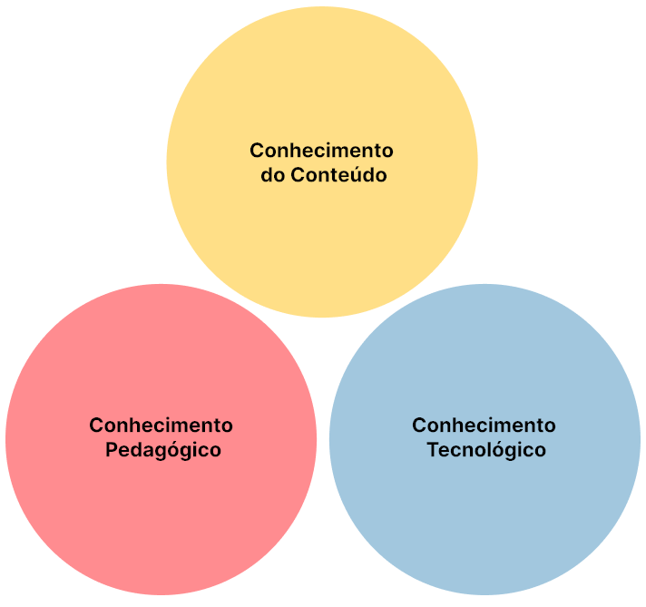

Os conhecimentos do professor
Para ser professor, é preciso dominar alguns conhecimentos-base. Há vários autores que discutem quais os conhecimentos necessários para a ação docente.
Vamos apresentar a visão trazida por Shulman (2005):
A ação docente, portanto, engloba diversos tipos de conhecimentos. O conteúdo, a prática pedagógica, o currículo, os contextos educativos...
Por exemplo: para dar aula de Matemática, o professor precisa saber o conteúdo de Matemática. Mas não apenas isso! O professor também precisa saber como ensinar Matemática. Mais recentemente, com o crescente uso das tecnologias digitais no ambiente escolar, um novo conhecimento é necessário: como ensinar Matemática utilizando tecnologias?
Articulação dos conhecimentos
A base do modelo teórico Conhecimento Tecnológico e Pedagógico do Conteúdo, ou seja, os conhecimentos primários (ou iniciais) envolvem os conhecimentos: conteúdo, pedagógico e tecnológico.
Vamos entender cada um deles?
Articulações
Conhecimento Pedagógico do Conteúdo
O Conhecimento Pedagógico do Conteúdo faz parte da articulação entre Conhecimento Pedagógico e Conhecimento do Conteúdo. O referido conhecimento supera a análise fragmentada e desarticulada dos conhecimentos pedagógico e do conteúdo ao serem analisados de modo isolado. Não há como pensar o processo de ensino de aprendizagem sem a articulação dos conhecimentos pedagógicos e sua relação com os conteúdos, ou melhor, com o currículo. Dominar determinado conteúdo não garante a aprendizagem dos alunos ou até mesmo uma boa aula. Para isso, faz-se necessário articulá-lo com os princípios da Pedagogia, de modo a proporcionar os aspectos organizativos e didáticos para a efetiva compreensão do determinado conteúdo.
Conhecimento Pedagógico da Tecnologia
O Conhecimento Pedagógico da Tecnologia faz parte da articulação entre Conhecimento Pedagógico e Conhecimento Tecnológico. Refere-se ao planejamento, à organização e à prática pedagógica permeada pelo uso de determinada tecnologia, ou seja, diz respeito ao conhecimento das potencialidades pedagógicas das tecnologias disponíveis. Para tanto, há que se conhecerem os vários recursos tecnológicos e ter habilidades para escolher e avaliar o que é adequado para a atividade específica, além de utilizar estratégias pedagógicas apoiadas pelo uso das tecnologias.
Conhecimento Tecnológico do Conteúdo
O Conhecimento Tecnológico do Conteúdo faz parte da articulação entre Conhecimento Tecnológico e Conhecimento do Conteúdo. É a relação recíproca entre tecnologias e conteúdo; aos professores cabe conhecer não somente os conteúdos e as disciplinas que ministram, mas como trabalhar determinado conteúdo com o uso as tecnologias, ou seja, selecionar, refletir, adequar. Refere-se ao conhecimento dos recursos tecnológicos disponíveis, ou seja, a intersecção dos componentes conteúdo e tecnologia se refere também ao conteúdo relacionado à tecnologia como seu conhecimento histórico, características e disponibilização ao usuário (professores e/ou alunos), de modo que tais tecnologias possam ser utilizadas com intencionalidade educativa.
Os conhecimentos iniciais (Conteúdo, Pedagógico e Tecnológico), bem como as articulações iniciais que compõem os conhecimentos: Pedagógico do Conteúdo, Pedagógico da Tecnologia e Tecnológico do Conteúdo, abrangem o Conhecimento Tecnológico e Pedagógico do Conteúdo.
O Conhecimento Tecnológico e Pedagógico do Conteúdo supera o conhecimento dos conceitos de seus componentes individuais, bem como suas interseções, pois envolve as múltiplas interações dos três conhecimentos iniciais e envolve o ensino dos conteúdos curriculares por meio de práticas pedagógicas que utilizam as tecnologias de modo articulado, transversal e contextualizado.
Mishra e Koehler (2006) apresentam o modelo teórico denominado Conhecimento Tecnológico e Pedagógico do Conteúdo por afirmar que as tecnologias digitais na prática docente precisam ser compreendidas, pesquisadas e analisadas.
O modelo teórico pode ser utilizado nas mais variadas tecnologias, áreas do conhecimento, propostas curriculares e contextos de ensino para a compreensão da complexa interação entre os três corpos de conhecimento iniciais e suas interseções, contribuindo para a integração de conhecimentos.
Agora que você compreendeu o que é o modelo teórico Conhecimento Tecnológico e Pedagógico do Conteúdo (TPACK), que tal ver alguns exemplos de produtos e projetos elaborados utilizando esse modelo? Se quiser ver os exemplos, clique em Estudo de caso. Se quiser já começar a fazer seu produto ou projeto educacional, clique em Laboratório de Criação.